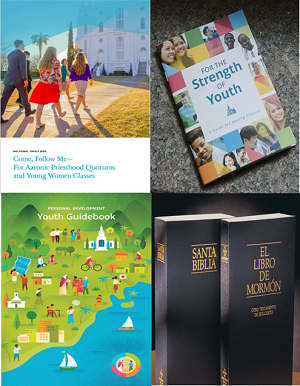
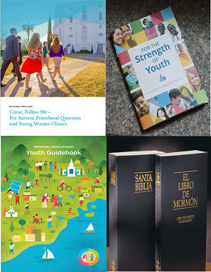

Leaders
The Church provides several resources that can be very useful to be able to exercise our calling in the best way and provides us with what is necessary to do so. Here we can find things that can help us magnify our calling.
The Church provides several resources that can be very useful to be able to exercise our calling in the best way and provides us with what is necessary to do so. Here we can find things that can help us magnify our calling.
 
